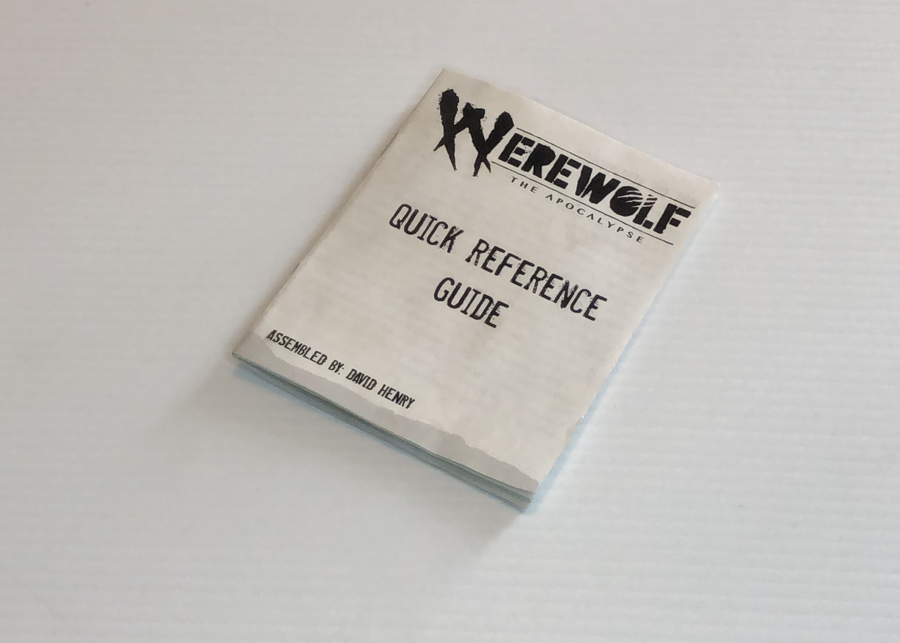

Werewolf: The Apocalypse Quick Reference Guide
This booklet is meant for players of the Table-Top Role-Playing Game Werewolf: The Apocalypse to quickly reference common rules and concepts at the table without having to open the core rulebook. It contains the rules for basic dice rolls, shapeshifting, common game lore, and a notes section.

This guide can be easily printed out on any home printer, and only requires a couple of staples to bind and a pair of scissors to trim the bottom seam to create the booklet.
To see more of this booklet, or download it yourself, click on the download link or check out the behance link below!
Download Werewolf: The Apocalypse 5th Edition Quick Reference Guide